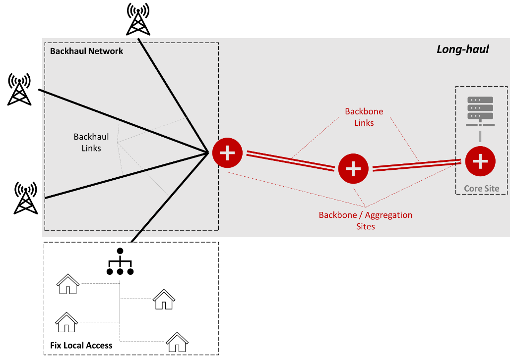
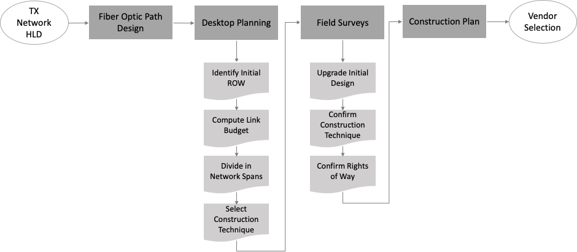
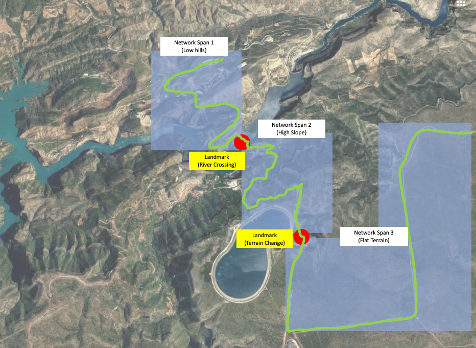
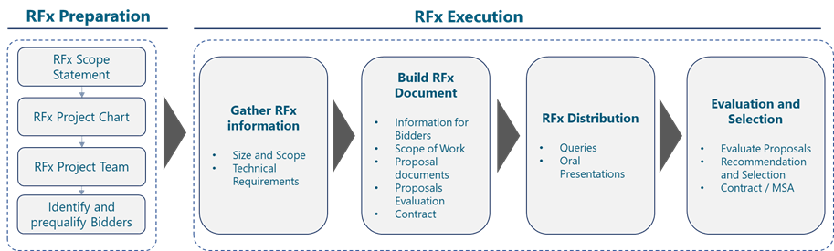

The Fiber
Optic Path Design discussed in the TX Network HLD Module process
intends to resolve a connectivity need, where the terrain and environmental
conditions may impose limitations and constraints to the feasibility of the
design.
Several
design considerations will have a direct impact to the construction process,
such as the Network Domain, the Deployment Scenario (greenfield
or brownfield), and the Optical Services intended for the network.
The
resulting design is completed with the Technical Specifications to
produce a Construction Plan, which is the document that describes the
construction activities, their dependences and the implementation requirements.
The Construction Plan is the technical input to the vendor selection
process.
It is
known that the hierarchical organization of the physical infrastructure
deployed by utilities (e.g. water, power, gas) is very similar to the fiber
network architecture. Similarly, the paths followed by roads and railways
connect the localities where network locations are placed. Therefore, the Fiber
Optic Path Design must seriously consider the reuse of existing
infrastructures to minimize the cost of fiber network deployment. This is
defined in this document as a Brownfield Scenario for construction. On
the other hand, if no utilities or infrastructure are available along the
designed fiber route, a Greenfield Scenario for construction is
considered, meaning that all construction needs to be performed from scratch,
with no reuse of existing facilities.
In
both cases, Rights of Way (ROW) are required; in a Brownfield
Scenario agreement must be established with the owner of the infrastructure
to set the terms and conditions of the shared use. In the Greenfield
Scenario, permissions to cross different properties or to deploy fiber
along roads will be required before construction commences. In case the
required permissions cannot be acquired, the optical route must go through a
re-design process.
3.1.1 Network
Domains: Long-haul and Local Access
In
the Local Access, enterprise or residential customers are typically
connected using a hub-and-spoke or tree topology to an aggregation location.
Point-to-point or PON (Passive Optical Network) technologies are increasingly
the technology of choice on such topologies. These scenarios are prone to
suffer more incidences; thus, the design aims to simplify the maintenance and
facilitate a faster roll-out in case of fiber cuts or other issues. Figure 3 below
depicts the typical domains (Local Access, Backhaul and Backbone) from a
telecom network. The construction management of Local Access networks is
out of the scope of this document.

Figure
3. Network Domains
Under
the Long-haul denomination, a distinction is made between Backhaul
and Backbone. Backhaul links connect base stations to the
aggregation points, typically established over relatively short spans
(<10km), with a low number of fibers per connection, typically between 4 and
8.
The Backbone
connects multiple aggregation points between each other and to the Core sites,
oftentimes located at different localities. As such, it runs over longer
distances and with higher capacity requirements than backhaul. Backbone
cables are equipped with a larger number of fibers and may implement route
protection, deployed in twin cables on independent infrastructures running in
parallel; the use of such protection techniques would be specified during the Fiber
Optic Path Design phase described in the TX Network HLD module.
Cables with 12 to 32 fibers are typical in the backbone because the incremental
cost of adding additional fibers during the construction process is minimal,
while it provides increased resiliency in the case of a fiber failure and also
enable the NaaS Operator to lease or rent spare fibers to other customers,
monetizing the infrastructure investment.
Table
1 below compares the key attributes of the backhaul and backbone scenarios and
can be taken by the NaaS Operator to identify their applicable scenario.
|
Domain
|
Endpoints
|
Distance
|
Topology
|
Fibers / Cable
|
|
Backhaul
|
Base Stations to aggregation
points
|
1-10 km
|
P2P
|
4-8
|
|
Backbone
|
Aggregation points to each
other
|
10 -100 Km
|
P2P
|
12-32
|
Table
1. Long-haul Domains
The
network domain being served by the optical infrastructure is therefore an
important input to the construction process, as it imposes specific
requirements and restrictions on the cabling, its supporting infrastructure,
the protection mechanisms, and the fiber path.
3.1.2 Greenfield
vs Brownfield
Civil
works form nearly 60% of the total cost of fiber construction projects. Up to
80-90%
savings on these civil works can be obtained from reusing infrastructures
from utilities, a very significatively impact on the total required investment.
The NaaS Operator can materialize those savings in different ways, for both Greenfield
(where utilities have not established their networks yet) and Brownfield
(where there are operating utilities) areas.
In a Greenfield
area, the NaaS Operator must approach the utilities and explore the possibility
for a coordinated deployment. Utilities deploying their networks will
dig trenches and lay pipes and ducts to provide their services. The same
infrastructure can be used for simultaneously deploying a fiber network,
resulting in very significant savings on the civil costs, when compared to a
new, independent telecom deployments.
In a Brownfield
area, an existing infrastructure can be reused to install fiber and therefore
reduce the construction costs and the project duration. Sharing agreements in
the form of elaborated Rights of Way must clearly establish
responsibility demarcation in terms of ownership, access to the infrastructure
and technical support. The owner of the property or the infrastructure may
impose limitations to the access, or the activities being performed during
installation and operation, and request compensation for the use of the
property. A careful negotiation of rights of way will save the NaaS Operator
from unexpected problems in the future. A template for the Right of Way
agreement is provided in Easement
and Right of Way Template.
Table
2 compares the two utility-sharing scenarios as a deployment opportunity
together with the cost and time advantages they may provide to the construction
effort.
|
Utility Sharing
Scenario
|
Opportunity
|
Cost Advantage
|
Time Advantage
|
|
Greenfield
|
Coordinated Deployment
|
80% reduction on civil works
|
None. Limited by utility
construction
|
|
Brownfield
|
Reuse existing infrastructure
|
No or little civil works.
Infrastructure adaptation only
|
Significant. Infrastructure
already available
|
Table 2. Greenfield and Brownfield Utility Sharing Scenarios
3.1.3 Optical
Services: Carrier Ethernet Services & Passive WDM
The
fundamental aspects of fiber optic technology design are discussed in the Primer on Fiber Optic Technologies Principles document.
The reader should refer to such document for additional information.
The
intended use of the network capacity determines whether the optical services
will be transported over a single optical carrier or using multiple carriers
(also known as lambdas which correspond to different optical frequencies) each
of them modulated by a different signal. The use of multiple lambdas increases
the effective capacity of the fiber optics connection, at the expense of requiring
more complex equipment and optical fibers with specific characteristics. The
use of multiple optical lambdas may also impose limitations on the maximum
length of the optical route.
On
routes longer than 80 100 km, aggregation sites should be inserted to avoid
the need for optical line amplifiers (OLA) or regenerators while providing an
additional access point to the optical infrastructure. This module assumes that
no OLA nor regenerators are required in any optical route. The selection of the
fiber type for the planned optical service is an input to the construction
process as it defined the requirements to the cables that would need to be
installed.
The G.652
fiber (and its evolution version G.657) is a low-cost fiber, standard and
qualified for services that don't require speed higher than 10Gbps with
short-haul distances.
If
the required bandwidth is higher than 10Gbps or there is a need to support
longer distances with higher performance, G.655 provides a better
solution. Cost can be 2x higher, but the savings on equipment to compensate
dispersion effects in this usage environment pay for the investment.
For
even higher bandwidths and longer spans G.654.E provides very good
results. Fibers are again more expensive, but the additional expenditure gets
compensated by the avoidance of OLAs or regenerators.
Table
3 shows the Optical services and applicability for each type of fiber and can
be used by the NaaS Operator to define the fiber type for each span to be
deployed. The use of G.655 is recommended considering that it is expected that demand
will increase through the time in service of the fiber (~20 years). The incremental
cost compared to G.652 is marginal considering that the alternative is to
redeploy new fiber or install additional and expensive electronics to allocate
more capacity on G.652; however, if only P2P Ethernet services are foreseen and
the NaaS Operator has tight budget constraints, G.652 can be selected. The use
of G.654 should be limited to very high capacity or very long span scenarios.
|
Optical Service
|
Fiber Type
|
Transmission
Window
|
Applicability
|
|
< 10Gbps, CWDM (Note 1),
P2P Ethernet
Short-haul (<100km)
|
G.652.D
|
1310 nm (zero dispersion)
1550 nm, 1625 nm
|
Routes below 200km and low
bit rates
|
|
Up to 100Gbps, DWDM (Note
2)
Long-haul (<200km)
|
G.655
|
1550 nm (zero dispersion)
1625 nm
|
Routes below 200km and high
bit rates
|
|
Up to 400G DWDM
Long-haul (>200km)
without OLA
|
G.654.E
|
1550 nm (zero dispersion)
|
Long routes and high bit
rates
|
|
Note 1: CWDM: Coarse
Wavelength Division Multiplexing. A wavelength multiplexing technique able to
transmit up to 18 lambdas with a 20nm channel spacing.
Note 2: DWDM: Dense Wavelength Division Multiplexing. A
wavelength multiplexing technique significantly denser than C-WDM, carrying
up to 160 lambdas with as little as 0,4 nm of channel spacing.
|
Table
3. Fiber selection per Optical Service.
The Fiber
Optic Path Design already described in the TX Network HLD module
provides the input to the initial plan of the route through a Desktop Design,
which consists on the analysis of the fiber optic path though topographic and
land use maps, satellite images and any other indirect methods that do not
imply visiting the path. This Desktop Design anticipates potential issues
during construction and identifies the Rights of Way (ROW) which would have to
be obtained.
The
initial plan is then validated through on-the-field Surveys, which
confirm feasibility of the planned route and the construction techniques which
could be applicable. The Survey will also discover infrastructures not
recorded in the Geospatial Database which could still be exploited during the
construction process. The Survey Reports obtained from the field visits
complement the Fiber Optic Path Design to produce a Construction Plan.
A description of the components of the Survey Reports are provided in section 3.2.2.
The Construction
Planning phase specifies the details of the physical infrastructure which
will support the optical cables and host fiber access points where required for
maintenance or interconnection, according to path design. The Construction
Plan includes details not only on the civil works, but also on the cable
installation technique and the interconnection to the route endpoints.
Figure
4 shows the activities within the Construction Planning Process, which are
further developed in the following sections.

Figure
4. Construction Planning Process
3.2.1 Desktop
Planning
The Fiber
Optic Path Design received from the TX Network HLD module must be
refined in preparation for the on-the-field Surveys. As part of the
desktop planning, the first step is to calculate the Optical Link Budget
for the complete path. The planned Optical Services will determine the
fiber characteristics required for the link budget calculation. A detailed
description of the Fiber Optic Link Design is provided in the TX Network LLD
module.
3.2.1.1 Optical Link Budget
Calculation
Optical
loss budget analysis is the verification of a fiber optics operating
characteristics. This encompasses items such as routing, circuit length, fiber
type, number of connectors and splices and wavelengths of operation. The
calculation is performed as described in the TX Network LLD module. In
absence of fiber-specific values, the use of conservative defaults is
advisable, as noted in Table 4:
|
Wavelength
|
Attenuation /
km
|
Connector Loss
|
Splice Loss
|
|
1310 nm
|
0.35 dB
|
0.75 dB
|
0.3 dB
|
|
1550 nm
|
0.22 dB
|
0.75 dB
|
0.3 dB
|
Table
4. Default values for Link Budget Calculations
3.2.1.2 Network Span
Identification
After
link budget calculation, the design path is then divided in Network Spans,
defined as portions of the optic path with similar construction characteristics.
The terrain condition, the type of rights of way and the preferred construction
technique establish the main attributes of the span.
The
spans shall be limited to a maximum length that permits a full survey within a
working day. Spans may be shorter if there are river or lake crossings, or if
the construction technique varies because of the terrain or other access or
legal restrictions. The use of other utilities along the path must also be
considered when defining the span length. The recommended procedure for Fiber
Optic Span Segmentation is described through the following steps:
- Start from the complete
Fiber Optic Path Design. Divide in segments which can be surveyed in one
working day.
- Consider a two-way Survey, including the return trip
- For each of the segments:
- If the segment crosses a significant landmark (e.g. river, lake, edge of cliff,
main roads) which would limit construction, divide the segment at the landmark
location.
- If the segment crosses properties with difficult or limited access rights of way,
divide the segment at that location.
- If the terrain characteristic significantly changes, divide the segment at that
location.
- Assign an identifier to
each resulting segment. Also identify the span begin and end in relation to a
landmark, address or any other relevant location which facilitates
identification.
- Note the location of the
span start and end. Obtain directions to the span location.
- Obtain details on
applicable rights of way to each network span. Include in the span survey documentation.
Network
spans are the construction unit for project management and infrastructure
acceptance. They are defined to have homogeneous construction conditions across
their length, so that progress can be easily monitored within each span and
deviations from the planned construction progress rates can be easily detected.
Figure
5 represents a fiber optic path design segmentation in three spans; in the first
span, the route runs along an area with low hills, finalized on a bridge
crossing a river. The second span departs from the bridge and goes uphill
through a high slope area, where several turns are required to reach the top of
the hills. Span three is defined by a clear change in the terrain conditions,
entering a flat area where the infrastructure can be more easily deployed.

Figure
5. Network Span segmentation
Next,
the construction technique for each span must be confirmed. Aerial cables are
one of the most preferred and cost-effective solutions, because existing pole
infrastructure can be easily reused without additional civil works.
Additionally, aerial cable construction can be easily modified to add
additional capacity.
However,
aerial deployments are more susceptible to damage. The falling of tree
branches, high winds or ice storms, vehicle accidents or the activity of
animals can make the aerial cable strain or break.
Unlike
the aerial deployment, buried fiber deployments are less susceptible to weather
damage (mostly wind and ice, but also direct sunlight and dryness), which makes
it often at least 10x more reliable than aerial routes, especially where severe
weather conditions.
Table
5 provides a summarized comparison between the Aerial and Underground
construction techniques. The NaaS operator must select one or the other
depending on the specifics of the project. As a general rule, aerial deployment
should be the selection of choice. Underground installations should be limited
to areas where regulations or the security of the installation requires so, and
always after a careful evaluation of the required budget. Details regarding
construction techniques can be found in the Fiber
Construction Technical Specifications Template.
|
Construction
Type
|
Relative Cost
|
Reuse of
existing infrastructure
|
Ease to upgrade
/ modify
|
Resiliency
|
|
Aerial
|
Low
|
Simple
|
High
|
Low
|
|
Underground
|
Medium to High
|
Only possible with ducts
|
None
Requires additional
digging.
|
High
|
Table
5. Comparison of Construction Techniques
As an
outcome of the desktop design phase, the NaaS operator shall obtain a
preliminary design for the optical network, the supporting infrastructure, and
a survey plan.
3.2.2 Survey
The
span Survey consists of on-site verification of the planned design to
detect potential problem areas and improvement opportunities before the
construction work commences. The scope of the survey must be adapted to the
planned type of installation, aerial or underground.
The execution of the Survey may be the scope of work
of an independent RFx process, prior to the Construction RFP. In such case, the
results of the survey would be inputs to the Construction RFP, providing
additional scope insight to the construction vendors. As an alternative, the
NaaS Operator may include the Survey into a turnkey project which includes the
path analysis within the Construction RFP scope.
The general
steps to complete the span Survey are the following:
- Proceed to the span start
point. Note date and time. Annotate starting point as origin of all measured
distances.
- Walk the path of the
network span providing a description of the topography along the route (sloping,
edge of cliff, adjacent to lake, forest surroundings, rivers, swampy areas,
etc.). Record distances and GPS coordinates.
- Take photos of all
obstacles on the route (existing services, bridge crossings, rocky areas,
buildings, built-up areas, paved/tarred areas, wetlands, overhead obstacles,
etc.).
- Describe the ground
condition along the route (rocky, sandy, grassy, clay, etc.). Record distances
and GPS coordinates.
- Verify the soil
classification by digging a pilot hole every 1km (hard, intermediate, soft) via
DCP (Dynamic Cone Penetration) testing.
- Identify all landmarks
where the route changes direction or gradient. Annotate turning radius and
slope change. Take photos.
- Record crossings with
roads, rails, and other services. Check and verify above and below ground
utility locations.
- Record the presence of
structures from utilities or any other constructions near the route.
- Record the presence of
telecommunication networks from other service providers near the route.
- Indicate the distance to
the nearest town, where the civil works material (sand, cement, stone, water,
tools, etc.) can be sourced from.
- Locate possible
warehouse/campsites where material can be safely stored.
- Indicate the availability
of hospitals / clinics / police stations along the route - in case required
during operational activities.
- Double-check recorded
details on the return journey.
After
each survey, a Survey Form shall be delivered to the project manager. A Path Survey Report
Template is provided to support this task. Instructions to use this form
are provided below:
- Attendance:
- List any personnel
joining the survey, including property, security and technicians.
- General Information.
- Provide Location of the
Span start. Include directions, contact person (if required), GPS coordinates
and any other information relevant to locate the starting position.
- Provide indications on
the path conditions: presence of other utilities or infrastructures in the
area. Condition of such infrastructures.
- Provide details on the
procedure to access the path location for survey: need to request permit or
keys, existing rights of way or not, etc.
- Draw an initial sketch of
the path. Can be taken from the initial route design.
- Power Supply.
- Provide
description of nearby power supply points which may be used during the
construction works (e.g. to recharge batteries of electronic equipment,
communication devices such as mobile phones or walkie-talkies, tools for pole
install, etc).
- Plant Drawing
- Provide a detailed drawing of the surveyed path. Include specific details, location and
distance to start for every relevant landmark.
- Photo Report
- Include
digital photos of the path: landmarks, surrounding area, nearby
infrastructures, etc.
3.2.3 Construction
Planning
The Construction
Plan takes the initial Fiber Optic Path Design and the results of
the span Surveys as inputs to produce detailed specifications and
instructions for the execution of civil works on each network span.
On
the Construction Plan, the NaaS Operator establishes the nominal
conditions to the construction works, which will be implemented by the
construction vendor. The steps to define the Construction Plan are
summarized below:
- From the Fiber Optic Path
design, produce drawings for each individual network span.
- When a deviation from the
initial design is required after the span survey, notify the Optical Designer
for recalculation of the optical attributes.
- For each network span,
describe the type of infrastructure: Aerial, underground, facility reuse.
- Establish the length of
the required infrastructure. This is required to determine costs. Use the
Geospatial resources to obtain precise estimates.
- Annotate the span
drawings with all relevant landmarks, obstacles or nearby infrastructures
identified during the survey.
- Define an initial, high
level count of infrastructure elements: number of poles, length of excavation.
Refer to the Fiber
Construction Technical Specifications Template for
dimensioning estimates per infrastructure type.
- Establish an initial Work
Breakdown Structure (WBS) for the Construction Plan in the form
of a Gantt diagram The Fiber
Construction Gantt Diagram Template is provided to support this task.
The
technical requirements are provided as part of the Runbook, in the Fiber
Construction Technical Specifications Template. The Construction Plan,
including such specifications, is used as the technical input to the Vendor
Evaluation process.
The Construction
Plan must be completed before the actual construction commences. This plan
validates the timelines, establishes task dependencies and defines the supply
chain that the vendor must establish for a smooth execution of the construction
works. Fiber construction projects, especially when deploying long distances of
fiber, are complex and require a high level of coordination within the
construction team.
The
development of the Construction Plan may be the scope of work of an independent
RFx process, prior to the Construction RFP. In such case, the Construction Plan
would be the primary input to the Construction RFP, providing additional scope
insight to the construction vendors. As an alternative, the NaaS Operator may
include the Construction Plan into a turnkey project which includes this step
within the Construction RFP scope.
To
deal with the project complexity in a systematic way, the Fiber
Construction Gantt Diagram Template is provided which consists of an
enumeration of the activities and dependencies involved in a fiber construction
project. The systematization of the construction plan facilitates an early
detection of deviations and permits comparison between the performance of the
construction teams working on different routes.
The
template consists of two sheets with different task breakdown for aerial and
underground construction plans. The template user must set the start date of the
first activity and the baseline duration of each task. All other dates shall
automatically populate. The template assumes sequential completion of tasks,
with no lag times or parallel activities. The user should modify these
assumptions based on the specifics of each project. A template should be
defined for each span, as the construction velocity may differ from span to
span due to the construction and access specifics of each of them.
This
section offers the NaaS operator a methodology and approach to select Vendors
to provide Fiber Construction solutions and construction services.
The
selection of the appropriate Vendors for Fiber construction projects requires
conducting a RFI/RFP (request for information and proposal) process which
analyzes the contractor ability to fulfill the end-to-end tasks and also
obtains pricing information to fulfill the required Construction Solutions and
Services.
Please
note that the Fiber Construction RFI/RFP process benefits from the framework
setup established in the generic RFx Process Module. It is recommended to go
through the RFx process module if further details are required regarding the
process. The RFx Process Module provides a general overview of the end-to-end
RFx process including the description of the activities which take place for
RFx development:

Figure 6. RFx Process
RFx
are issued to obtain Information, Proposals or Quotes from the market. In order
to obtain truly valuable and effective information from these processes, the
documents generated during the RFx development must include all the relevant
information that vendors will require to provide accurate responses to the NaaS
Operator request, avoid misunderstandings and prevent implementation issues.
Before
starting the RFI/RFP process, it is necessary to select the companies which
will be receiving the documentation. The following sections provide instruction
to select, invite and prequalify potential Bidders for the process.
The
first step is to identify potential contractors to which the Fiber Construction
RFx should be addressed, with an eventual invitation to bid. The Construction
Management team must lead this process, with the technical assistance from
the TX Design group on construction issues which could affect the
optical transmission (e.g. bend radius, span length, fiber cable protection,
etc).
The
NaaS should invite vendors with previous and successful experience with the
company and their competitors. In absence of previous references, options may
include web research as well as requesting a list of Fiber Construction vendors
to local partners and authorities, local Chambers of Commerce and professional
associations.
The
potential Respondents shall be sent an invitation letter, an abstract of the
project scope and relevant RFx dates, and a set of questions to fill the
prequalification form. This form provides key questions which the NaaS Operator
will use to determine the suitability of the potential Respondent to address
the project scope. This qualification form includes technical, commercial and
legal questions with the objective to short-list the proper set of companies
invited to the RFI/RFP process.
4.1.1 Invitation
to Tender
The
NaaS Operator shall submit an invitation to tender to the identified companies
to inform about:
- The Name of the RFx Process
- An abstract on the Scope of Work
- The RFx process relevant dates
- A request for an acknowledgment and intention to respond
The
objective of the formal invitation is to inform vendors of commencement of the
RFx process.
4.1.2 Pre-qualification
form
Potential
Respondents shall receive, together with their invitation to bid, a
prequalification form
The
prequalification form responses shall be evaluated for pre-qualification
according to the provided Fiber
Construction Pre-qualification Template. This document identifies the main
capabilities of the vendors, and discards those without the technical or
financial capabilities to fulfill the project requirements.
The
template consists of a number of questions about the vendor capabilities on
different areas, such as Finance, Quality Management, CSR&EHS (Corporate
Social Responsibility & Environment, Health and Safety) and OSP (Outside
Plant) implementation experience. The questions come with predefined responses,
typically compliant or non-compliant. The NaaS Operator will respond to the
questions by selecting the option that better applies to the vendor under
evaluation. The template will assign points based on those responses and will
provide an overall score that can be used to rank the candidate vendors.
The
prequalification form delivered to potential respondents should follow the Fiber
Construction Pre-qualification Template, where the scoring calculations and
notes shall be removed.
Having
selected the candidate vendors through the pre-qualification process, the
vendors shall enter an RFx process which is described in detail in the RFx Process
module.
The
RFx document identifies the RFx objective (obtain information, proposal and/or
quotes), the scope of the technical project, the instructions to respond and
applicable terms and conditions.
The
Fiber Construction RFI/RFP Template provided as part
of the PlayBook covers the areas in the RFx structure described above. This
document must be adapted by the NaaS Operator to
the fiber construction specifics of the project.
The Fiber
Construction RFI_RFP Template provides additional information on the inputs
required to perform a response evaluation. Further details and general
procedures on evaluation criteria are included in the RFx Management
Module.
The
evaluation process must be based on fair competition, with mandatory and
optional requirements being clearly identified and properly notified to the
bidders. The scoring model must be closed before the commencement of the
analysis and, if by any reason it must be modified during the RFQ process,
bidders must be notified and given the opportunity to amend their proposals.
The evaluation
process as well is further developed in the RFx Process module and is
considered out of the scope of this document.